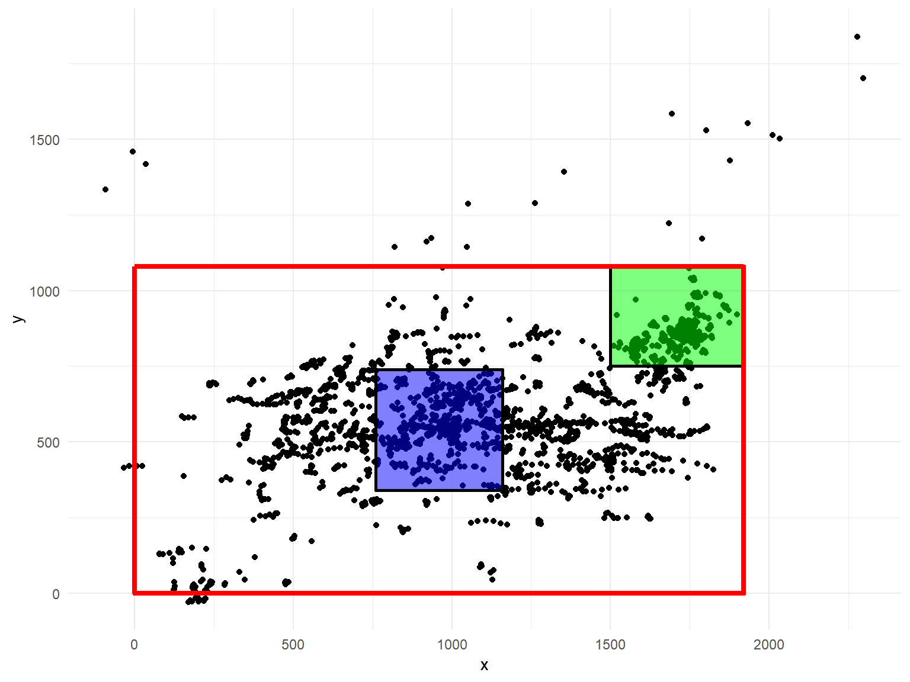

area-analysis.RmdArea allow us to define square areas and analyse the contents.
We can plot areas with the geom_area_boundaries function.
resolution <- obj$info$resolution
center <- AreaObject("center", c(resolution$width/2 - 200, resolution$width/2 + 200),
c(resolution$height/2 - 200, resolution$height/2 + 200))
top_upper <- AreaObject("Top Upper", c(1500, 1920), c(750, 1080))
plot_gaze(obj, downsample = 50) +
geom_area_boundaries(center, alpha = 0.005, fill="blue") +
geom_area_boundaries(top_upper, alpha = 0.005, fill="green") +
geom_eyer_monitor(obj)
And then we can add information about which area is each recording is to the gaze and fixations
## 'data.frame': 130000 obs. of 4 variables:
## $ x : num 1720 1720 1720 1721 1722 ...
## $ y : num 848 847 845 843 843 ...
## $ time: int 0 1 2 3 4 5 6 7 8 9 ...
## $ area: chr "Top Upper" "Top Upper" "Top Upper" "Top Upper" ...##
## center Top Upper
## 33880 23861Any recording not in given areas is assigned NA_character_. We can then select only those recordings in arease.
fixations_in_areas <- obj$data$fixations[!is.na(obj$data$fixations$area),]
ggplot(fixations_in_areas, aes(x,y, size=duration)) + geom_point() +
geom_area_boundaries(center, alpha = 0.005, fill="blue") +
geom_area_boundaries(top_upper, alpha = 0.005, fill="green") +
geom_eyer_monitor(obj) + theme_minimal()